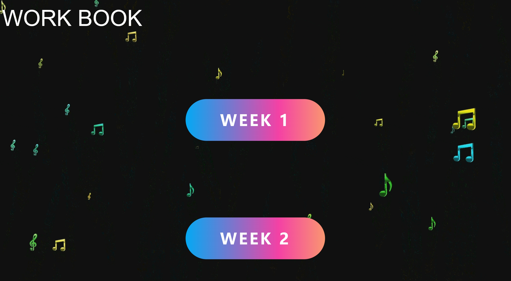
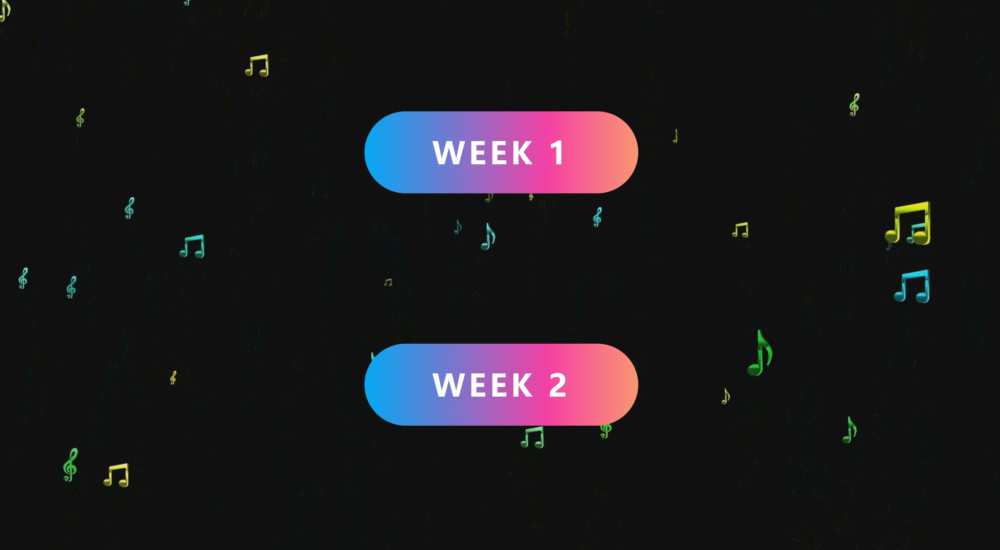
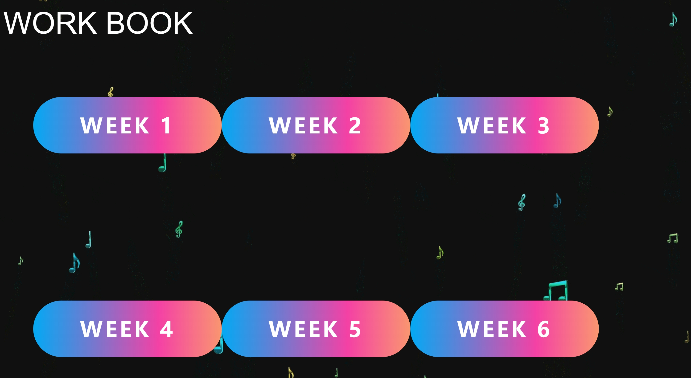
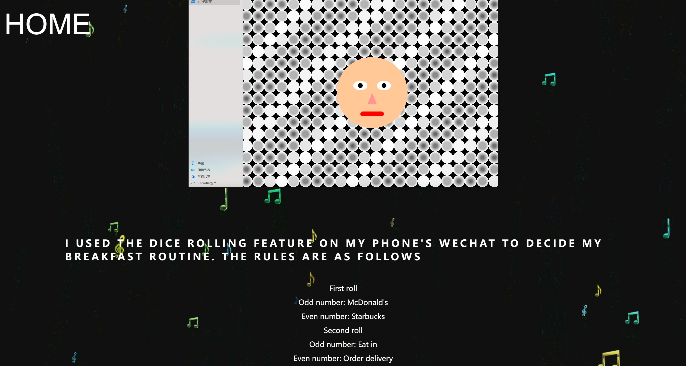

In the past two weeks, I've gained a rough idea of the webpage's appearance and created a simple sketch. Initially, I opted for a minimalist approach to design the webpage to enhance user accessibility and browsing experience. I decided to incorporate a musical theme as the primary color scheme, aiming to evoke feelings of comfort and relaxation for visitors, even though I didn't plan to include actual music. Consequently, I found a background video featuring floating musical notes, which I converted into a looping GIF animation. While searching for inspiration, I discovered a sleek button animation effect that appealed to me, so I promptly integrated it into the webpage. Throughout the production process, I encountered some challenges, such as button overlap issues, which I successfully resolved with assistance from ChatGPT.
   